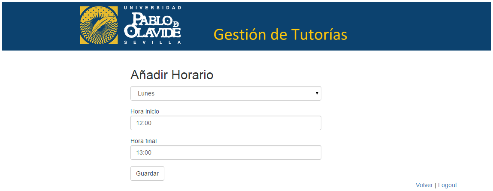
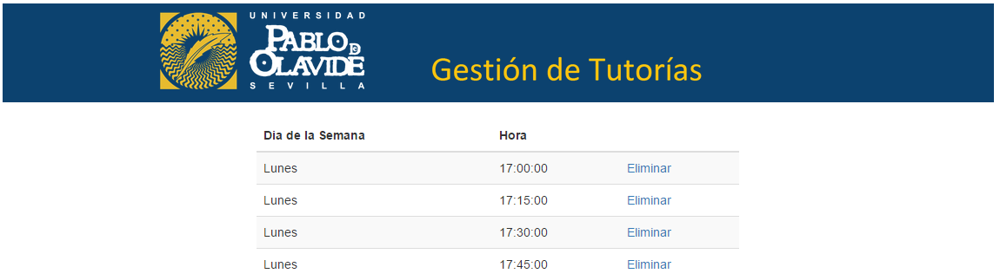

Horarios de profesor¶
Siendo profesor, el usuario puede añadir sus horarios de tutorías,consultarlos y eliminarlos.
- Añadir horario
- Ver horarios
- Eliminar horario
Añadir horario¶
Para que un profesor añada un horario pulsa en el panel del profesor el botón Añadir horario.
Un profesor puede añadir una franja horaria, por ejemplo de 17:00 a 18:00 y el sistema descompone esa franja en fracciones de tutoría de 15 minutos.
Ver horarios¶
Para que un profesor vea los horarios que dispone para los alumnos pulsa en el panel del profesor el botón Ver horarios.
Eliminar horario¶
Un profesor, como usuario puede eliminar un horario, pulsa en el panel del profesor el botón Ver horarios.
En la siguiente página, aparece una lista de los horarios del profesor.
Si el profesor quiere eliminar un usuario pulsa sobre el botón Eliminar de ese horario y el sistema lo elimina quitando su disponibilidad para los alumnos.